Ground-floor apartment2 bedrooms
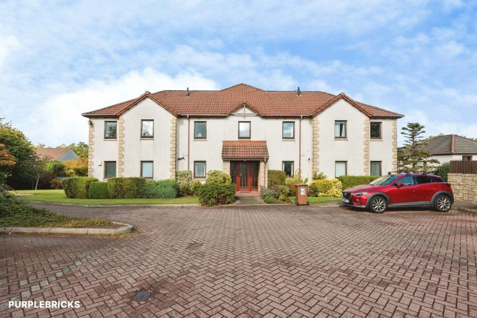
£180,000Asking price
14 Crathes Way, Broughty Ferry
Listed 9 October 2026 · Purplebricks
Advertised garden upkeep contribution of £20 per month.
Daily property watch
Homes for sale · 2–3 bedrooms · Up to £270,000
Updated 10 October 2026 · 4 new · 88 in the archive

Listed 9 October 2026 · Purplebricks
Advertised garden upkeep contribution of £20 per month.
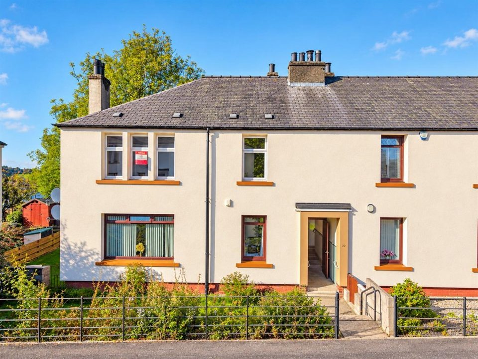
Listed 9 October 2026 · Rosie Fraser Real Estate
Listed 8 October 2026 · Axis Property
Original agent page unavailable; portal listing linked.
First seen 10 October 2026; listing date unavailable · Rosie Fraser Real Estate
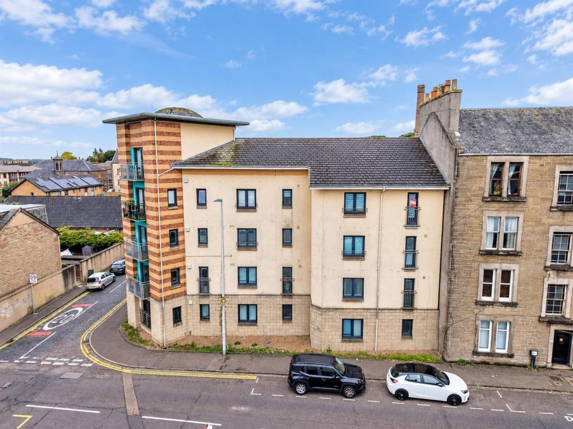
Listed 8 October 2026 · Rosie Fraser Real Estate
The Home Report describes a third/top-floor flat; the agent describes the second floor. Number 58 is the individually numbered flat address in the Home Report.
First seen 9 October 2026; listing date unavailable · Gilson Gray
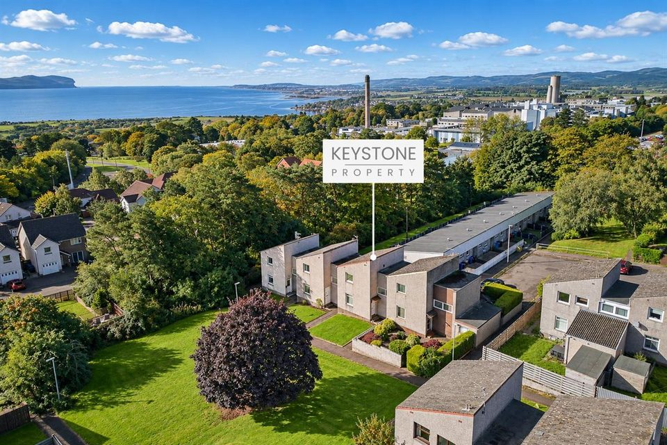
Listed 7 October 2026 · Keystone Property
Some advertising images are virtually staged.
Listed 6 October 2026 · Slater Hogg & Howison
Advertised address omits building/unit number; two-bedroom top-floor flat with allocated parking.
Original agent page unavailable; portal listing linked.
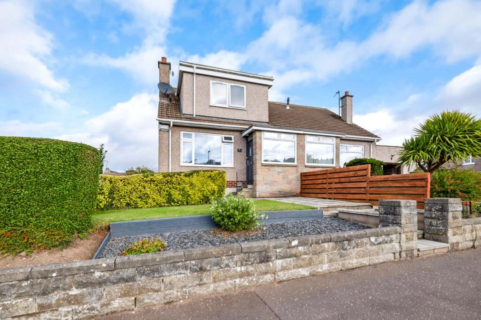
Listed 6 October 2026 · McIntyre Properties
Agent advert displays the address as Dalrymple Terrace, Dundee, 2 DD2; building number placement is unclear and has not been inferred.
Listed 6 October 2026 · Gilson Gray
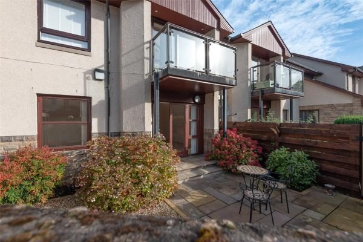
First seen 7 October 2026; listing date unavailable · Lindsays
Original listing date unavailable; first discovered through recent TSPC inventory.
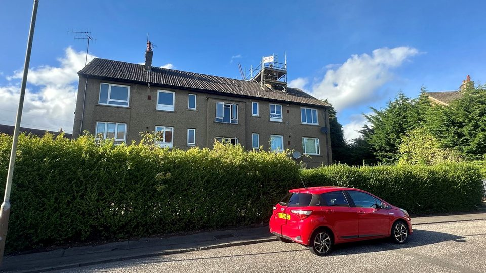
First seen 7 October 2026; listing date unavailable · The Chamber Practice
Original listing date unavailable; first discovered through recent TSPC inventory.
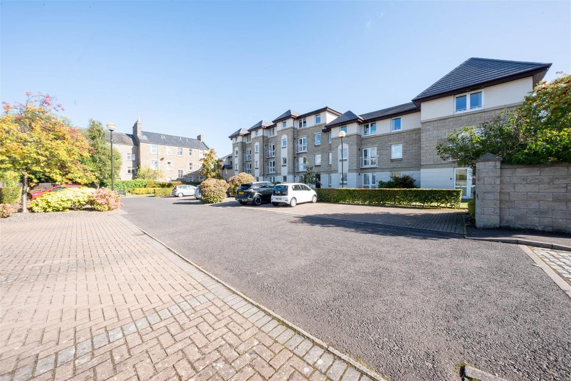
Listed 5 October 2026 · Simple Approach Estate Agents
Retirement apartment restricted to residents aged 60+. Factor fees and a monthly management fee apply; amount not stated.
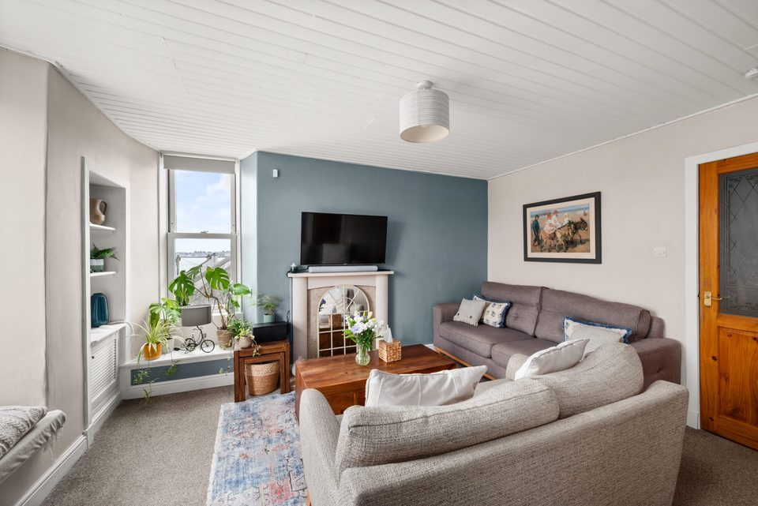
Listed 5 October 2026 · Verdala
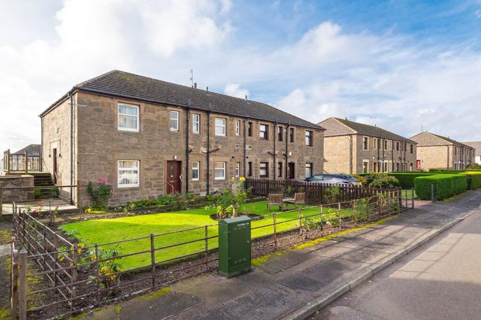
Listed 5 October 2026 · Keystone Property
Some modernisation required.
Original agent page unavailable; portal listing linked.
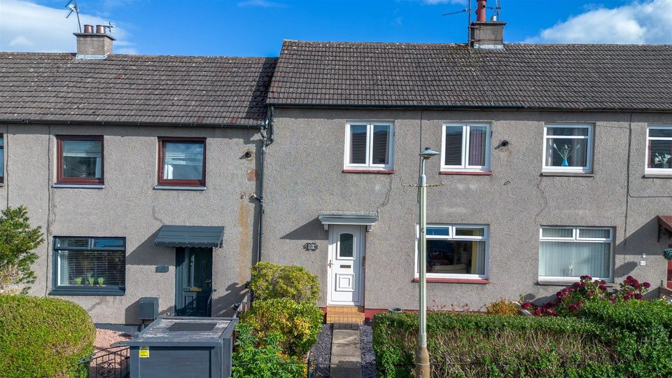
Listed 5 October 2026 · Simple Approach Estate Agents
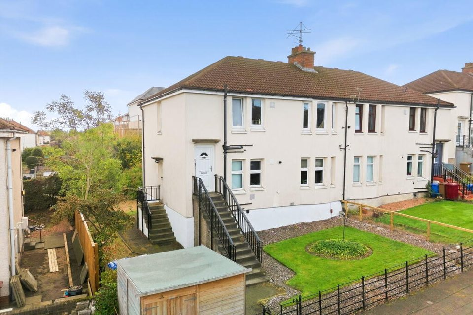
Listed 5 October 2026 · Eversley Property
Non-traditional construction. Building/flat number is not disclosed in the accessible individual advertisements.
Original agent page unavailable; portal listing linked.
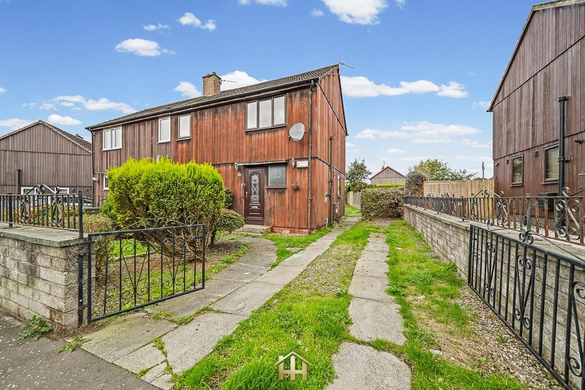
Listed 5 October 2026 · Harmony Homes
Renovation opportunity; some marketing images are staged.

Listed 2 October 2026 · Verdala
Advertised as three bedrooms; additional sitting room offers a flexible layout.

Listed 2 October 2026 · Harmony Homes